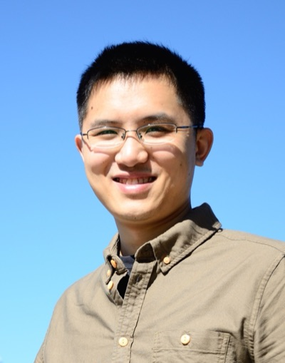

Associate Professor
School of Science, Tianjin University, Tianjin, China
I am a theoretical and computational condensed matter physicist. My research focuses on topological quantum materials, strongly correlated electron systems, unconventional superconductivity, and the role of crystal symmetry — including spin space groups — in shaping exotic quantum phases.
| 2000 – 2004 | B.Sc., Henan Normal University |
| 2004 – 2007 | M.Sc., Sichuan University |
| 2007 – 2012 | Ph.D., China Academy of Engineering Physics / Institute of Physics, CAS |
| 2012 – 2015 | Postdoctoral Researcher, Institute of Physics, CAS |
| 2015 – 2025 | Associate Professor, Southwest University of Science and Technology |
| 2017 – 2018 | Academic Visitor, ETH Zürich |
| 2019 – 2021 | Postdoctoral Research Fellow, Singapore University of Technology and Design |
| 2025 – Now | Associate Professor, School of Science, Tianjin University |
Electronic structure and topology of Weyl/Dirac semimetals, nodal-line semimetals, and topological insulators. Predicting topological surface states, Fermi arcs, and their interplay with correlations and magnetism.
DFT+DMFT and many-body methods applied to Mott insulators, heavy-fermion compounds, kagome metals, and mixed-valence systems with orbital selectivity and electronic correlations.
Pairing symmetry and gap structure in noncentrosymmetric, chiral, and topological superconductors. Nodal-line superconductivity, multigap superconductivity, and time-reversal symmetry breaking.
Full classification of spin space groups and their applications to altermagnetism, magnetic topological materials, and spin-momentum locking in magnetically ordered systems.
Ph.D. Students
Ph.D. Student
Joined Sep. 2025
Topological circuits
Ph.D. Student
Joined Sep. 2026
DFT+DMFT calculations
M.Sc. Students
M.Sc. Student
Joined Sep. 2026
Charge density waves (DFT)
M.Sc. Student
Joined May 2026
Anomalous & orbital Hall effects (DFT)
Loading publications…